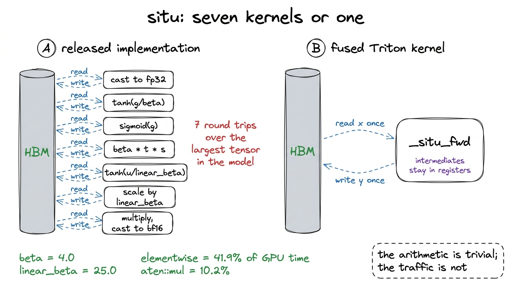
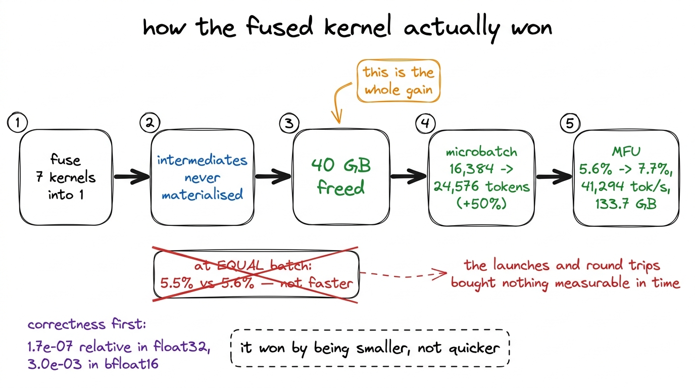
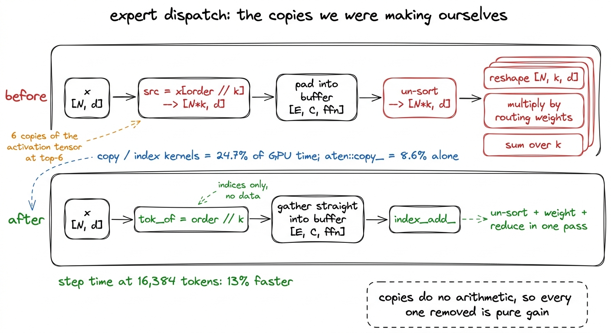
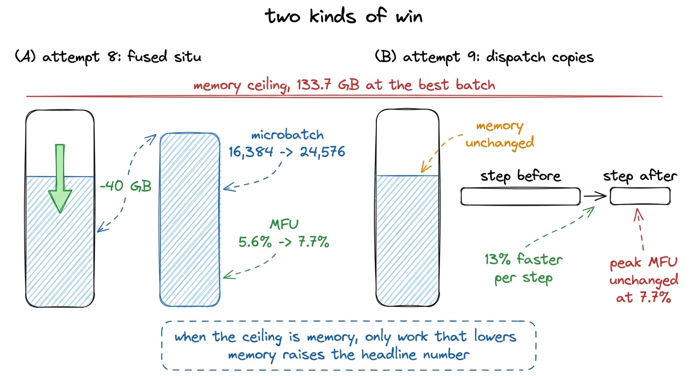
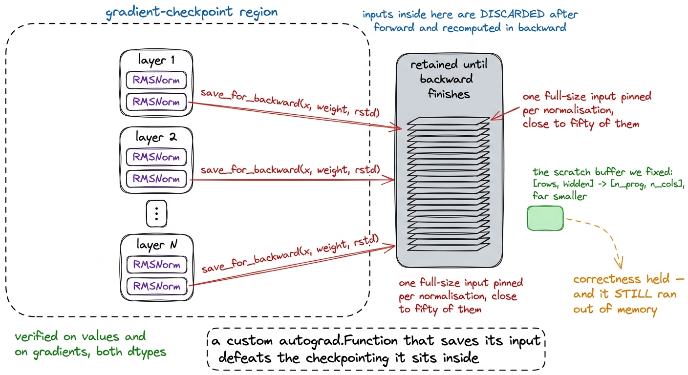
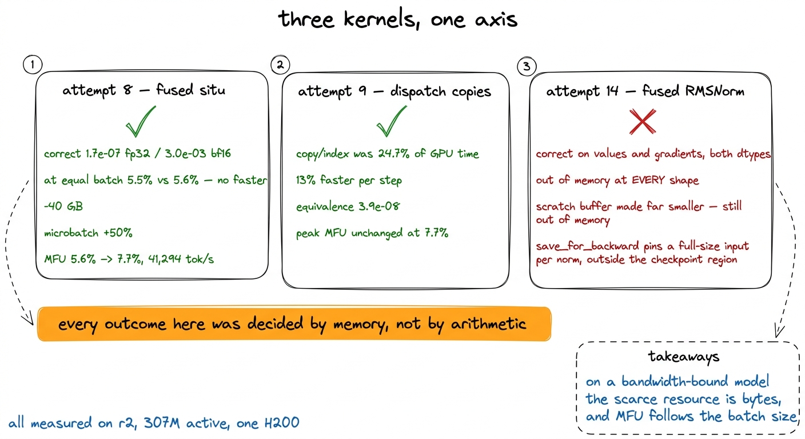

Two kernels that worked, and one that did not
A fused situ activation that won by being smaller rather than faster, a dispatch cleanup worth 13% per step, and a numerically perfect RMSNorm kernel that ran out of memory on shapes the released module handles.
The profile in the previous chapter named two targets and dismissed everything else. Elementwise operations took 41.9% of GPU time, copy and index kernels took 24.7%, and matrix multiplication — the arithmetic MFU is actually measuring — took about 12%. A model in that state is not short of compute. It is short of memory bandwidth, and the only work worth doing is work that moves fewer bytes.
Three attempts followed directly from that profile. Two of them worked. The third produced a kernel that computes the right answer and cannot be used.
All three were measured on r2, the rung above the one this book trains: 307 million active parameters, on a single H200. Every percentage below belongs to r2 rather than to the run described in the rest of the book. Both rungs sit on one card, so nothing here involves sharding; r1 was never distributed at all.1 This matters for reading the numbers rather than for the conclusions. r1's benchmark figure with the same optimisations in place is 66,877 tokens per second at 5.9% MFU, and the 38,147-step run it actually performed sustained 27,600 to 28,900 tokens per second at 2.4 to 2.5%. The kernels below were written against r2 and shipped into the same code path both rungs use.
Attempt 8: one kernel instead of seven
K3's activation function is situ, parameterised by beta = 4.0 and linear_beta = 25.0. It splits its input in half, applies one nonlinearity to the gate half and another to the up half, and multiplies the two together. Written with PyTorch operators, that is roughly seven separate CUDA kernels:
gate = x[..., :d].to(float32) # read + write
up = x[..., d:].to(float32) # read + write
t = tanh(gate / beta) # read + write
s = sigmoid(gate) # read + write
situ_a = beta * t * s # read + write
up = linear_beta * tanh(up / linear_beta) # read + write
out = (situ_a * up).to(bf16) # read + writeEvery line in that listing reads a tensor from HBM, performs a small amount of arithmetic, and writes the result back. In a mixture-of-experts layer the tensor being read has shape [experts, capacity, ffn_dim], which is the largest tensor in the model. The arithmetic is trivial and the traffic is not, which is exactly the shape the profile described: aten::mul alone was 10.2% of all GPU time.
One kernel that reads the input once, holds every intermediate in registers, and writes the output once removes about six of those round trips.

figure rendering · The released activation and the fused replacement. The operations areThe backward had to be derived by hand
The forward is straightforward. The backward is the part that decides whether the kernel is worth writing at all, because the memory saving only survives if we refuse to store the intermediates that autograd would otherwise differentiate through. That means writing the derivatives out:
a(g) = beta * tanh(g/beta) * sigmoid(g)
b(u) = linear_beta * tanh(u/linear_beta)
y = a(g) * b(u)
da/dg = (1 - tanh(g/beta)^2) * sigmoid(g)
+ beta * tanh(g/beta) * sigmoid(g) * (1 - sigmoid(g))
db/du = 1 - tanh(u/linear_beta)^2The backward kernel recomputes a and b from the saved input rather than reading them from a stored tensor. That is the decision that carries the memory saving into the backward pass: recomputing two nonlinearities from a tensor already in registers costs a handful of instructions, while storing them costs two full-size tensors per activation site for the whole backward.2 This Triton build has no tl.math.tanh. The kernel uses tanh(x) = 2 * sigmoid(2x) - 1, which is an exact algebraic identity rather than an approximation, and tl.sigmoid is present in every build. Checking which maths functions your Triton version actually exposes is worth doing before writing the kernel rather than after.
Correctness first, and a tolerance that lied
Before any timing, the kernel was compared against the released module on values and gradients, across both linear_beta settings and both dtypes. Relative error came out at 1.7e-07 in float32 and 3.0e-03 in bfloat16, both inside what the dtype carries.
The first version of that check reported a failure, and the kernel was not at fault. The check used an absolute tolerance. situ multiplies by beta and by linear_beta, so its outputs are scaled well above unit magnitude, and a threshold that is reasonable for values near 1 asks bfloat16 for more significant digits than it has once values are two orders of magnitude larger. An absolute threshold silently becomes stricter as the tensors it judges get larger, which is why every comparison in this project is relative to the output scale.
The result, and the direction it came from
| situ | tokens per microbatch | MFU | outcome |
|---|---|---|---|
| released | 16,384 | 5.6% | fits |
| released | 24,576 | — | out of memory |
| fused | 16,384 | 5.5% | 40 GB less memory |
| fused | 24,576 | 7.7% | 41,294 tok/s, 133.7 GB |
At equal batch size the fused kernel is not faster: 5.5% against 5.6%, which is within measurement noise and slightly on the wrong side of it. Every one of the seven kernel launches it removed, and every round trip to HBM those launches performed, bought nothing measurable in time.
What it bought was 40 GB. The intermediates that are no longer materialised are no longer allocated, and 40 GB is enough headroom for a microbatch 50% larger. At 24,576 tokens per microbatch the same kernel runs at 41,294 tokens per second and 7.7% MFU, against 5.6% before, which is the 1.38x that appears in the attempt log.
The natural assumption runs the other way. A fused kernel is supposed to win by being quicker. This one won by being smaller, and the smallness converted into MFU through the batch size rather than through the clock.

figure rendering · The chain from fusion to MFU. The step that pays is the memory, not thAttempt 9: the copies we were making ourselves
The corrected profile put copy and index kernels at 24.7% of GPU time, second only to elementwise work, with aten::copy_ at 8.6% on its own. Copies perform no arithmetic at all, so every copy removed is pure gain. The question is which of them are ours.
Reading our own expert dispatch, two were avoidable.
The first was a full materialisation. The dispatch sorts tokens by expert, and it built the sorted tensor directly:
order = torch.argsort(flat, stable=True)
src = x[order // k] # [N*k, d] — a copy of every token, once per routed slotAt top-6 that is six copies of the activation tensor, created before any arithmetic happens, and then immediately copied again into the padded buffer the batched matmuls read from. The fix is to keep the index rather than the tensor and gather once, straight into the padded buffer:
tok_of = order // k # [N*k] indices, not [N*k, d] of data
...
idx = tok_of[sel]
xp[e_loc, r_loc] = x[idx] # one gather, into the buffer we needed anywayThe second was the output path. Having sorted the tokens, we undid the sort back into [N*k, d], reshaped to [N, k, d], multiplied by the routing weights, and reduced over k. Each of those steps allocates and fills a full-size tensor, so that is three more of them for an operation that is, in the end, a weighted scatter-accumulate. A single index_add_ folds the un-sort, the weighting and the reduction into one pass over the data.

figure rendering · The dispatch path before and after. Four full-size tensors disappear aThe result. Step time at 16,384 tokens per microbatch fell by 13%. Peak MFU stayed at 7.7%.
Those two sentences look contradictory and are not. The peak MFU figure is measured at 24,576 tokens per microbatch, where memory sits at 133.7 GB and there is no room for a larger batch. The run is memory-capped rather than time-capped, so making each step 13% quicker moves the throughput at every batch size we can fit without moving the batch size we can fit, and the headline number is set by the latter. Attempt 8 raised the ceiling by lowering the memory; attempt 9 moved us faster underneath a ceiling that did not move.

figure rendering · The two working attempts act on different axes. One lowers the ceilingA check worth doing. index_add_ accumulates contributions in a different order than a reduction over k, and floating-point addition is not associative, so the results are permitted to differ. We compared the new path against the looped reference implementation and found 3.9e-08, the same figure the original fused dispatch produced against the same reference, so the ordering did not matter at this shape. It might at another one, which is why that comparison runs every time rather than once.3 The looped reference is the per-expert Python loop that attempt 1 replaced. It is roughly 17.5 times slower and is kept precisely for this: a slow implementation whose only job is to be obviously correct is worth its runtime, because it turns "the fast path is probably fine" into a number.
Attempt 14: a correct kernel that could not be used
RMSNorm written with PyTorch operators takes several passes over its input: square, reduce, normalise, scale. One Triton kernel does it in a single pass. r2 has 16 layers, and each carries two norms plus the latent mixture-of-experts norm, so the forward pass runs a normalisation close to fifty times and the traffic adds up.
The backward was derived by hand, including the term for rstd's own dependence on x, which is the term that is easiest to drop:
dx = (w*dy - xhat * mean(xhat * w * dy)) * rstdCorrectness. Verified against the released module across several hidden sizes and both dtypes, on values and on gradients, with the same relative-error check attempt 8 used. Every configuration passed. The kernel computes the right thing.
The result. Every configuration ran out of memory, including shapes the released module handles comfortably. Not slower, not marginally worse: out of memory at 16,384 tokens per microbatch, where the released path fits with room to spare, and out of memory at 24,576.
The first diagnosis was easy to find and wrong. The backward allocated dw_part = torch.empty_like(xc), a full [rows, hidden] scratch tensor per normalisation, purely to compute the weight gradient before summing it. At 24,576 rows across every normalisation in the model, all live until backward finishes, that is a large amount of scratch for a quantity whose final shape is one vector. So it was replaced with the arrangement production kernels use: a [n_prog, n_cols] partial-reduction buffer, far smaller, with each program accumulating a stripe of rows in registers and summing the partials at the end.
Correctness held. It still ran out of memory at both shapes.
That second measurement earns the attempt its section, because it eliminated the explanation we reached for first. The scratch buffer was not the cause.

figure rendering · The likelier explanation. The kernel allocates almost nothing; the autThe likelier explanation is an interaction we did not anticipate when we wrote it. _FusedRMSNorm is a custom torch.autograd.Function, and it calls save_for_backward(x, weight, rstd). Tensors saved that way are retained outside the gradient-checkpoint region. Each normalisation therefore pins a full-size input that checkpointing would otherwise have discarded and recomputed, and the custom Function quietly defeats the checkpointing it sits inside.
This is worth knowing before writing any fused kernel for a checkpointed model. A hand-written autograd.Function that saves its input can cost more memory than the operators it replaced, even when the kernel body allocates almost nothing. The routes around it are to make the kernel recompute from something already saved, which is what the fused situ kernel does, or to let the checkpoint boundary own the saving.4 Checkpointing was itself a fight on this model. gradient_checkpointing_enable() is a silent no-op on the released Kimi code: it declares support, sets the flag, and the decoder loop never calls the checkpoint function. The tell was in our own memory numbers — 76.7 GB with it off and 76.8 GB with it on at 8,192 tokens. Identical memory is the signature of a no-op. Making it real also required use_cache = False, because the KV cache is mutated inside the forward and the recomputed forward would otherwise see different state.
What we learned. A kernel can be numerically perfect and still be a regression. This one removes passes over the data and spends far more memory than it saves, and memory is the resource that converted into MFU at every step of this investigation. "Verified correct" and "ready to use" are different claims, and the gap between them is not in the numerics.
There is a second, smaller lesson in how it was diagnosed. The first stacked benchmark run reported out-of-memory for every configuration, which reads like a capacity limit rather than a regression. Re-running at 16,384 tokens, where the released path fits comfortably, isolated the problem to the new kernel in a single measurement. A benchmark sweep should always contain a shape that is known to work, because a table of failures with no control tells you nothing about which change caused them.
What the three have in common

figure rendering · The three kernel attempts. Two wins and one failure, all three decidedThree attempts, three outcomes, and the same resource decided all of them.
Attempt 8 removed six round trips over the largest tensor in the model and gained nothing measurable in time, then gained 1.38x by freeing 40 GB. Attempt 9 removed four full-size tensors from the dispatch path, made every step 13% quicker, and left the headline MFU exactly where it was because the headline is set at the largest batch that fits. Attempt 14 removed several passes over the data, computed the right answer at every shape we checked, and could not run at all because of what its autograd wrapper retained.
On a memory-bandwidth-bound model, bytes are the currency and MFU is denominated in batch size. That is a narrower conclusion than "fuse your kernels", and it predicts the results above in a way the general advice does not. It also predicts what comes next: FP8 is attractive because it halves the bytes crossing the bus, and a bigger GPU is attractive because it has more memory and more bandwidth. Both were tried, and neither behaved the way the argument suggests.